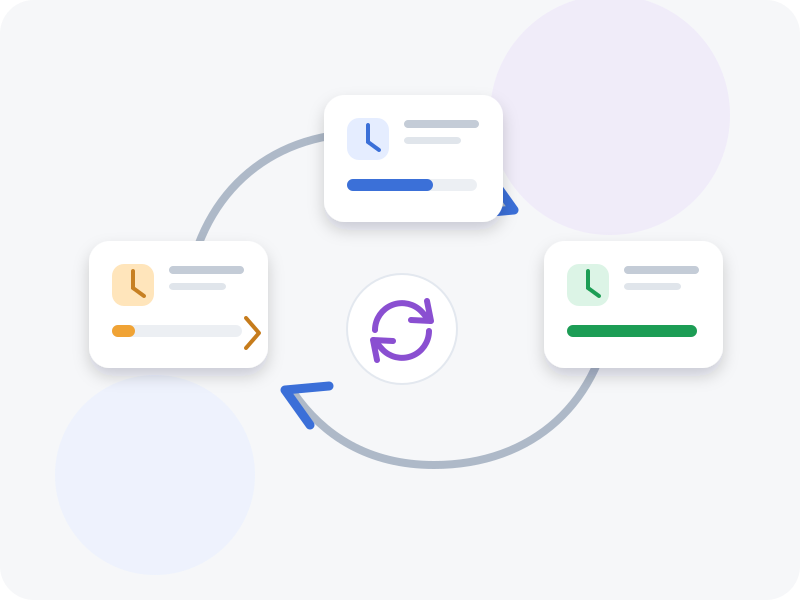

1Xoay vòng tài khoản
Hết hạn mức? Tài khoản kế tiếp làm tiếp ngay.
Mỗi công cụ có thể có nhiều tài khoản. Gọi bin/ask claude (theo tên công cụ) là Pentagon tự xoay vòng giữa chúng.
- Tài khoản đầu hết hạn mức thì tự chuyển sang tài khoản kế tiếp — và làm tiếp phần dở, không làm lại.
- Thêm bao nhiêu tài khoản cũng được: một dòng trong
config/workers.conf+bin/login <tên>. - Mỗi tài khoản lưu đăng nhập trong thư mục riêng nên không đè lên nhau.